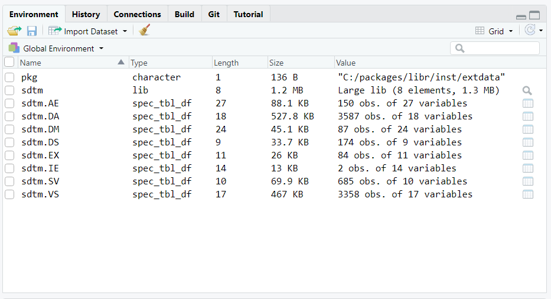

The libr package brings the concepts of data libraries, data dictionaries, and data steps to R.
These concepts have been available in SAS® software for decades. But they have not been available in R … until now!
The libr package also includes an enhanced equality operator to make data comparisons more intuitive.
The above concepts are implemented in the libr package with four key functions. They are:
libname(): Creates a data librarydictionary(): Creates a data dictionarydatastep(): Performs row-by-row processing of data%eq%: An infix operator to check equality between objectsLet’s look at some simple examples of each of the four functions above. These examples will be using some sample data. The sample data is included in the libr package, and also available for download here.
libname() FunctionThe libr libname() function is quite similar to the SAS® libname statement. The first parameter is the name of the library. The second parameter is a path to a directory the library will point to. The third parameter is the engine with which to read and write the data.
library(libr)
# Get path to sample data
pkg <- system.file("extdata", package = "libr")
# Define data library
libname(sdtm, pkg, "csv") The libname() function above will send two types of information to the console:
The summary print-out looks like this:
# library 'sdtm': 8 items
- attributes: csv not loaded
- path: C:/packages/libr/inst/extdata
- items:
Name Extension Rows Cols Size LastModified
1 AE csv 150 27 88.1 Kb 2020-09-18 14:30:23
2 DA csv 3587 18 527.8 Kb 2020-09-18 14:30:23
3 DM csv 87 24 45.1 Kb 2020-09-18 14:30:23
4 DS csv 174 9 33.7 Kb 2020-09-18 14:30:23
5 EX csv 84 11 26 Kb 2020-09-18 14:30:23
6 IE csv 2 14 13 Kb 2020-09-18 14:30:23
7 SV csv 685 10 69.9 Kb 2020-09-18 14:30:24
8 VS csv 3358 17 467 Kb 2020-09-18 14:30:24
The summary displays what type of library it is, where it is located, and what data (if any) is already in the library directory. In this case, there are eight ‘csv’ files available.
For each of the eight files, the libname() function also displayed the column specifications used to import the data file. A column specification looks like this:
$VS
-- Column specification ------------------------------------------
cols(
STUDYID = col_character(),
DOMAIN = col_character(),
USUBJID = col_character(),
VSSEQ = col_double(),
VSTESTCD = col_character(),
VSTEST = col_character(),
VSPOS = col_character(),
VSORRES = col_double(),
VSORRESU = col_character(),
VSSTRESC = col_double(),
VSSTRESN = col_double(),
VSSTRESU = col_character(),
VSBLFL = col_character(),
VISITNUM = col_double(),
VISIT = col_character(),
VSDTC = col_date(format = ""),
VSDY = col_double()
)
The column specification shows how the data was imported. Since ‘csv’ files do not contain well-defined data type information on each of the columns, the libname function has to guess at the data types. The column specification shows you what the guesses were. This is useful information. You should review these column specifications to see if the libname function guessed correctly. If it did not guess correctly, you can control the import data types by sending a specs() collection of import_spec() objects to the import_specs parameter on the libname() function. See the specs() documentation for an example and additional details.
lib_load() FunctionObserve that there is difference between the SAS® libname statement and the libr libname() function. The difference is that after the SAS® libname statement is called, the data is immediately available to your code using two-level (<library>.<dataset>) syntax.
With the libr function, on the other hand, the data is immediately available using list syntax on the library variable name. To get the two-level syntax, you first have to call the lib_load() function.
lib_load(sdtm)
# # library 'sdtm': 8 items
# - attributes: csv loaded
# - path: C:/packages/libr/inst/extdata
# - items:
# Name Extension Rows Cols Size LastModified
# 1 AE csv 150 27 88.1 Kb 2020-09-18 14:30:23
# 2 DA csv 3587 18 527.8 Kb 2020-09-18 14:30:23
# 3 DM csv 87 24 45.1 Kb 2020-09-18 14:30:23
# 4 DS csv 174 9 33.7 Kb 2020-09-18 14:30:23
# 5 EX csv 84 11 26 Kb 2020-09-18 14:30:23
# 6 IE csv 2 14 13 Kb 2020-09-18 14:30:23
# 7 SV csv 685 10 69.9 Kb 2020-09-18 14:30:24
# 8 VS csv 3358 17 467 Kb 2020-09-18 14:30:24Notice on the console printout that the library is now “loaded”. That means the data has been loaded into the workspace, and is available using two-level syntax. If you are working in RStudio, the environment pane will now show all the datasets available in the library.

At this point, you can work with your data very much the same way as you would in SAS®. You can pass these datasets into statistical functions, or manipulate them with dplyr functions. Note that you can also work with individual variables on the datasets using dollar sign (“$”) syntax.
# Get total number of records
nrow(sdtm.DM)
# [1] 87
# Get frequency counts for each arm
table(sdtm.DM$ARM)
# ARM A ARM B ARM C ARM D SCREEN FAILURE
# 20 21 21 23 2 The datasets will be available in the workspace for the length of your session. If you wish to unload them from the workspace, call the lib_unload() function. See the lib_load() and lib_unload() documentation for additional information on these functions.
To see more examples of the libr data management functions, refer to the articles on Basic Library Operations and Library Management.
dictionary() FunctionOnce you have a library defined, you may want to examine the column attributes for the datasets in that library. Examining those column attributes can be accomplished with the dictionary() function. The dictionary() function returns a tibble of information about the data in the library.
Continuing from the example above, let’s look at the dictionary for the ‘sdtm’ library created previously.
dictionary(sdtm)
# # A tibble: 130 x 10
# Name Column Class Label Description Format Width Justify Rows NAs
# <chr> <chr> <chr> <chr> <chr> <lgl> <int> <chr> <int> <int>
# 1 AE STUDYID character NA NA NA 3 NA 150 0
# 2 AE DOMAIN character NA NA NA 2 NA 150 0
# 3 AE USUBJID character NA NA NA 10 NA 150 0
# 4 AE AESEQ numeric NA NA NA NA NA 150 0
# 5 AE AETERM character NA NA NA 72 NA 150 0
# 6 AE AELLT logical NA NA NA NA NA 150 150
# 7 AE AELLTCD logical NA NA NA NA NA 150 150
# 8 AE AEDECOD character NA NA NA 43 NA 150 0
# 9 AE AEPTCD numeric NA NA NA NA NA 150 0
# 10 AE AEHLT character NA NA NA 63 NA 150 0
# # ... with 120 more rowsThe resulting dictionary table shows the name of the dataset, the column name, and some interesting attributes related to each column. As you can see, the libr dictionary table is overall quite similar to a SAS® dictionary table. See the dictionary() function documentation for more information.
datastep() FunctionPeople with experience in SAS® software know that it is sometimes advantageous to process row-by-row. In SAS®, row-by-row processing done with a data step. The data step is one of the most fundamental operations when working in SAS®.
The libr package offers a datastep() function that simulates this style of row-by-row processing. The function includes several of the most basic parameters available to the SAS® datastep: keep, drop, rename, retain, and by. Here is a simple example, again using the data from the library already defined above:
age_groups <- datastep(sdtm.DM,
keep = c("USUBJID", "AGE", "AGEG"), {
if (AGE >= 18 & AGE <= 29)
AGEG <- "18 to 29"
else if (AGE >= 30 & AGE <= 44)
AGEG <- "30 to 44"
else if (AGE >= 45 & AGE <= 59)
AGEG <- "45 to 59"
else
AGEG <- "60+"
})
age_groups
# # A tibble: 87 x 3
# USUBJID AGE AGEG
# <chr> <dbl> <chr>
# 1 ABC-01-049 39 30 to 44
# 2 ABC-01-050 47 45 to 59
# 3 ABC-01-051 34 30 to 44
# 4 ABC-01-052 45 45 to 59
# 5 ABC-01-053 26 18 to 29
# 6 ABC-01-054 44 30 to 44
# 7 ABC-01-055 47 45 to 59
# 8 ABC-01-056 31 30 to 44
# 9 ABC-01-113 74 60+
# 10 ABC-01-114 72 60+
# # ... with 77 more rowsNotice that the datastep() function kept only those variables specified on the keep parameter. The data step itself is passed within the curly braces. You can put any number of conditional statements and assignments inside the curly braces, just like a SAS® data step. Also like a SAS® data step, you do not need to ‘declare’ new variables. Any name not identified as an R function name is assumed to be a new variable, and will be created automatically on the input data.
The datastep function also supports “first.” and “last.” functionality through use of the by parameter. See additional examples on the datastep() help page and in the data step article.
In Base R, there are two comparison functions: The double-equal (==) infix operator, and the identical() function. The weakness of the infix operator is that it will not test for NULL or NA values. The weakness of the identical() function is it will compare everything, including attributes assigned to the objects you are comparing. If there is even a small difference in one of these attributes, the identical() function will return FALSE. This behavior is inconvenient, especially when working with dplyr functions, as these functions assign many attributes to the datasets they are manipulating.
The %eq% function contained in the libr packages attempts to provide a more intuitive comparison. The %eq% is an infix operator that will test for NA and NULL values, and will ignore attributes in any data comparison. These qualities make it more suitable for the types of comparisons normally encountered when working with data. The suitability of the %eq% operator can be illustrated by examining these methods side-by-side on the same input data.
# Set up input data
v1 <- c(1, 2, 3)
v2 <- c(1, 2, 3)
attr(v2, "label") <- "My Label"
v3 <- c(1, 2, NA)
# Comparing "equal" vectors
v1 == v2 # TRUE TRUE TRUE
identical(v1, v2) # FALSE
v1 %eq% v2 # TRUE
# Comparing "unequal" vectors
v1 == v3 # TRUE TRUE NA
identical(v1, v3) # FALSE
v1 %eq% v3 # FALSENote the different results returned by the three different comparison functions. The %eq% operator is similar to the identical() function in that it will always return a single TRUE or FALSE value. The difference is that it ignored the “label” attribute assigned to vector v2, and only looked at the data values. Since it saw all the data values were equal, the %eq% operator returned TRUE, while the identical() function returned FALSE.
You can see some more examples of the %eq% operator in the help documentation, or in the Enhanced Equality article.